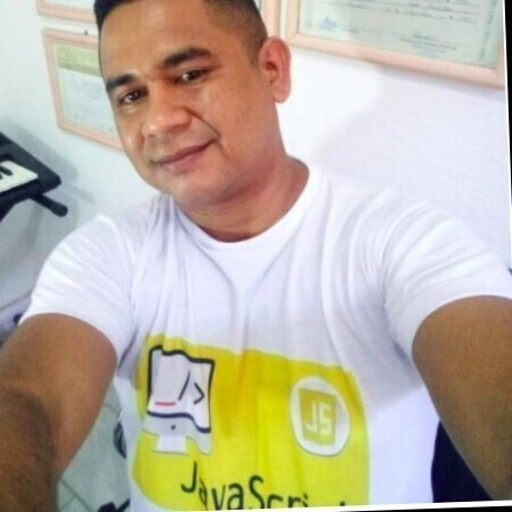
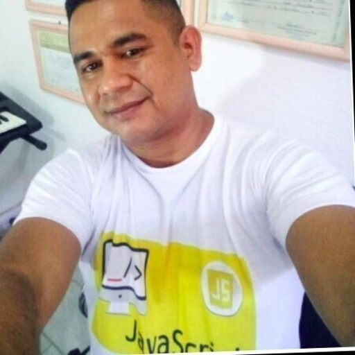

Ao começar o processo seletivo na Trybe, não dei início apenas em meu projeto de transição de carreira, mas também e não menos importante, o início de amizades que me são valiosas!
Sou grata por tê-los conhecido!
Anna é formada em Engenharia de Petróleo, e atuou no segmento por um tempo mas decidiu mudar para a área de tecnologia. Impulsionada pela paixão por Engenharia e Tecnologia, hoje é estudante de Desenvolvimento de Software na Trybe.
Daniel trabalhou como tatuador durante alguns anos em estudio próprio, e resolveu mudar de carreira quando conheceu a Trybe. Além de estudante de Desenvolvimento de Software na Trybe, também trabalha na Ringa como Desenvolvedor Front-End Jr II.
Tiago é formado em Jornalismo e trabalhava como motorista de Uber. Curioso por tecnologia, começou a estudar sobre programação, mas foi quando conheceu a Trybe que surgiu a oportunidade de se qualificar na melhor escola de Desenvolvimento Web do Brasil.
Tonis é tecnológo por definição e apaixonado por programação, é também aluno de Desenvolvimento Web Full Stack na Trybe.

 
